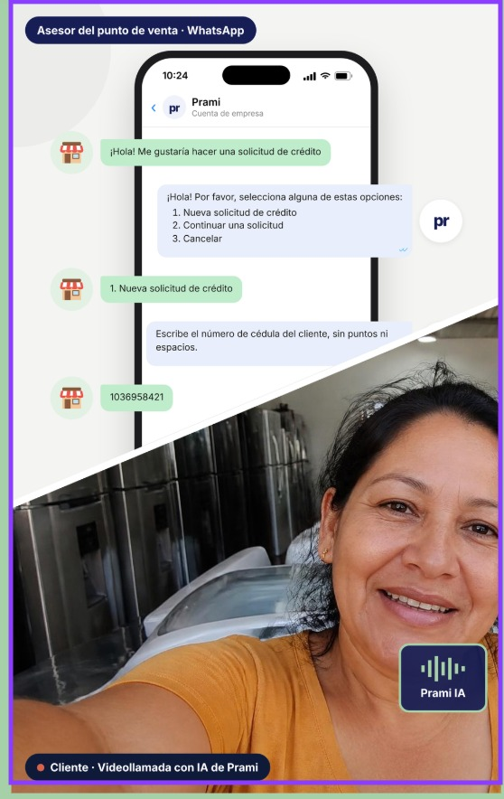

Información que no existe.
Quien nunca ha tenido crédito tiene una vida económica que no aparece en las centrales de riesgo.
Conocemos a personas que aún no han tenido crédito. Una videollamada con IA reúne la entrevista, la evaluación psicométrica y el análisis de riesgo que una microfinanciera realiza en días.
Quien nunca ha tenido crédito tiene una vida económica que no aparece en las centrales de riesgo.
Entrevistar, comprender el contexto de la persona y analizar el riesgo suele requerir varias etapas y distintos profesionales.
La información se recoge en momentos distintos. Conectarla para evaluar a una persona toma tiempo.
Prami concentra en 30 minutos tareas de entrevista, evaluación psicométrica y análisis de riesgo para evaluar crédito para personas.
Una conversación guiada por IA conoce la actividad económica, los ingresos y los compromisos de quien solicita el crédito, incluso si no tiene historial.
Caso ilustrativo · Información ficticia
La videollamada incorpora una evaluación psicométrica junto con la entrevista sobre la realidad económica de la persona. Dos partes de un mismo proceso de crédito.

Conecta la información recogida durante la videollamada para analizar la capacidad de pago de la persona, más allá de su historial crediticio.
Señales de ejemplo, sin puntaje real.
La entrevista, la evaluación psicométrica y el análisis de riesgo se reúnen en una evaluación. El trabajo de varios roles, conectado en un solo proceso.
Explora una evaluación ilustrativa de crédito para una persona sin historial.
El crédito es para personas. Prami busca comprender a quienes pueden pagar, pero todavía no tienen un historial que lo demuestre.
Una sola videollamada reúne la recolección de información, la evaluación psicométrica y el análisis de riesgo.
Relaciona la evaluación con la información recogida en la conversación.
Prami reúne la entrevista, la evaluación psicométrica y el análisis de riesgo en el mismo proceso.
Define con nosotros el alcance de la implementación y tus requisitos de operación.
Conversemos sobre cómo conocer mejor a las personas que aún no han tenido crédito.